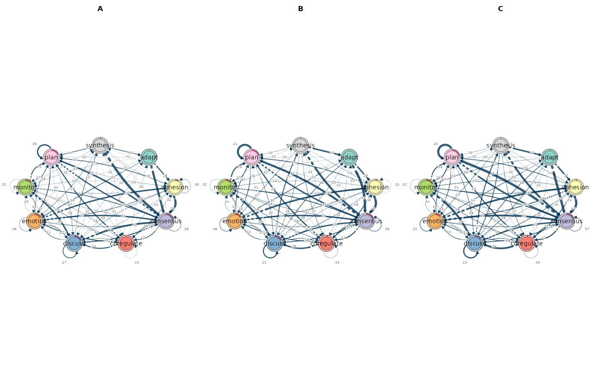
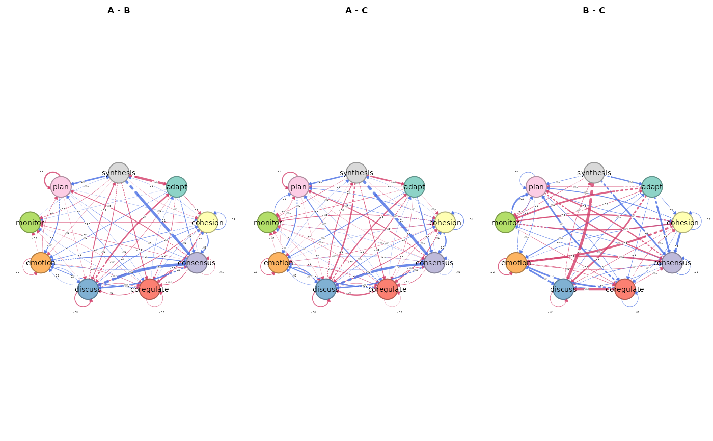
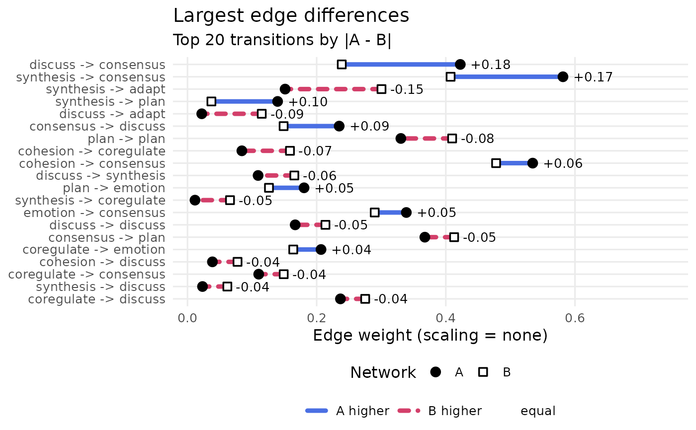
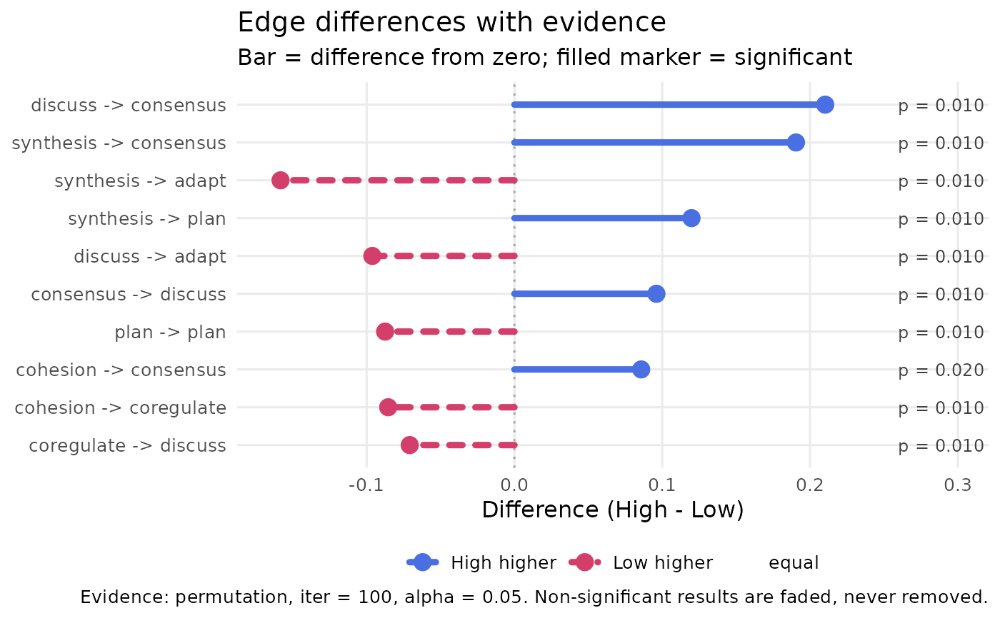

Compare two or more networks
Source:R/compare_networks.R, R/compare_networks_plot.R
compare_networks.RdCompares any number of networks pairwise (all pairs, or every network
against one reference) and returns one tidy object: an edge table, a
node (centrality) table, a global-metric table and per-network structural
metrics, each returned by a named verb and carrying a pair column so
nothing ever needs list indexing.
Descriptive by default; test = adds permutation, Bayesian and bootstrap
evidence to the same tables. plot() draws one view per call.
Usage
compare_networks(
...,
reference = NULL,
scaling = c("none", "minmax", "max", "rank", "zscore", "robust", "log", "log1p",
"softmax", "quantile", "frobenius", "row"),
measures = c("InStrength", "OutStrength", "Betweenness"),
labels = NULL,
test = "none",
iter = 1000L,
alpha = 0.05,
adjust = "none",
paired = FALSE,
rope = NULL,
seed = NULL
)
# S3 method for class 'net_network_comparison'
print(x, digits = 2L, ...)
# S3 method for class 'net_network_comparison'
plot(
x,
type = c("networks", "difference", "edges", "nodes", "global", "heatmap", "scatter",
"inference"),
pair = NULL,
combined = TRUE,
top_n = 20L,
measure = NULL,
labels = TRUE,
digits = 2L,
what = NULL,
...
)Arguments
- ...
Passed to
cograph::splot()for the network views (e.g.layout,node_size,minimum); ignored by the other views.- reference
NULL(default) compares all pairs. A single network name or index compares every other network against that one; the reference is alwaysnetwork_a, sodiff = reference - other.- scaling
Scaling applied to every network before comparison; one of
"none"(default),"minmax","max","rank","zscore","robust","log","log1p","softmax","quantile","frobenius","row". Inference (test != "none") requires"none": the tests are defined on the networks as estimated.- measures
Centrality measures for the node table. Any of
OutStrength,InStrength,ClosenessIn,ClosenessOut,Closeness,Betweenness,BetweennessRSP,Diffusion,Clustering.NULLorcharacter(0)skips the node table.- labels
Logical; print the signed difference on the edge and node views. Default
TRUE. The heatmap always shows its values.- test
Character vector of inference backends, any of
"none"(default),"permutation","bayes","bootstrap". Several may be combined; each fills the columns it supports (see Details).- iter
Number of permutations / posterior draws / bootstrap replicates per pair. Default
1000.- alpha
Significance level (permutation, bootstrap) and
1 - ci(Bayesian credible interval). Default0.05.- adjust
Multiplicity adjustment for permutation p-values, passed to
stats::p.adjust()within each pair and table. Default"none".- paired
Logical; paired permutation (equal observation counts).
- rope
Optional half-width of a region of practical equivalence on the difference scale (Bayesian backend only). Adds
bayes_p_ropeand abayes_decisionof"different","equivalent"or"undecided".- seed
Optional integer seed. Each pair uses
seed + pair index, so results are reproducible and independent of pair order.- x
A
net_network_comparisonobject.- digits
Decimals in printed values. Default
2.- type
For
plot(): one view per call."networks"(default) draws each network once withcograph::splot();"difference"draws the signed difference network of each pair;"edges"is a ranked dumbbell of the largest edge differences;"nodes"the same for centralities;"global"the 22 comparison metrics;"heatmap"the signed difference matrix;"scatter"weight against weight;"inference"is a forest of the edge differences on the difference scale, with credible intervals when the Bayesian backend ran and the p-value printed per edge. It needstest != "none"and raisesnestimate_compare_no_testotherwise.- pair
Optional selection of comparisons to draw; default all. Any of: the pair name(s) as printed (
"A vs B"); the two network names (c("A", "B"), either order); one network name ("A", every pair it takes part in); or index/indices into the pair table (1,c(1, 3)). Fortype = "networks"this selects the networks taking part in the chosen pairs.- combined
When
TRUE(default), a multi-pair view is one figure (facets for theggplotviews, one base-graphics page for"networks"and"difference"). WhenFALSE, the view is split: theggplotviews return a named list of single-pair plots, one per pair, and the base-graphics views draw one panel per page.- top_n
Number of edges shown in the edge view (largest absolute differences first). Default
20.- measure
Optional centrality measure(s) to restrict the node view.
- what
Deprecated alias for
type, kept so existing calls keep working.
Value
An object of class net_network_comparison: a list with
networks: named list of the input networks asnetobjects (scaled weights);matrices: named list of scaled weight matrices;pairs: data.frame, one row per comparison:pair,network_a,network_b;edges: data.frame, one row per pair x cell:pair,network_a,network_b,from,to,weight_a,weight_b,diff,abs_diff,rel_diff,ratio,log_ratio,rank_a,rank_b,rank_diff,percentile_diff,status(both/only_a/only_b/neither),higher(network_a,network_borequal), plus inference columns;nodes: data.frame (orNULL), one row per pair x node x measure:pair,network_a,network_b,node,measure,value_a,value_b,diff,abs_diff,rank_a,rank_b,higher, plus inference columns;global: data.frame, one row per pair x metric (22 descriptive metrics in five categories, plus inference rows):pair,network_a,network_b,category,metric,key,value, plus inference columns;network_metrics: data.frame, one row per network x structural metric:network,metric,value;differences: named list ofnetdifferenceobjects (one per pair);scaling,reference,measures,test,iter,alpha,adjust,paired,rope,directed(named logical),n_networks,n_pairs.
summary() returns the one-row-per-pair overview table; the full tables
come from the named verbs edge_differences(), node_differences(),
global_differences() and network_metrics(). plot() draws one view
per call.
print() returns x invisibly.
plot() returns a ggplot for type = "edges", "nodes",
"global", "heatmap", "scatter" and "inference", or a named list of such plots
(one per pair) when combined = FALSE. type = "networks" and
type = "difference" draw in base graphics – with cograph::splot()
when cograph is installed, otherwise with a built-in circular drawer –
and return NULL invisibly.
Details
Guarding. Ratios are never Inf/NaN: ratio is NA when
weight_b == 0, rel_diff is NA when both weights are 0, and
log_ratio = log1p(a) - log1p(b) is NA when either weight is negative.
No pseudo-counts are added.
Cells. Every cell of the weight matrix is a row, including the
diagonal and edges absent from one network (weight 0); when both networks
are undirected only from <= to cells are kept.
Inference. "permutation" (via permutation()) adds
perm_effect, perm_p, perm_sig to edges and nodes, and two rows
M (sum of absolute edge differences) and S (largest absolute edge
difference) to global with permutation p-values. "bayes" (via
bayes_compare()) adds bayes_diff (posterior mean difference),
bayes_ci_lower, bayes_ci_upper, bayes_pd (probability of direction),
bayes_p, bayes_sig to edges; with rope, bayes_p_rope (normal
approximation from the posterior mean and SD) and bayes_decision.
"bootstrap" (via vertex_compare()) appends structural rows
(density, mean weight, centralization, reciprocity) to global with
boot_se, boot_ci_lower, boot_ci_upper, boot_z, boot_p,
boot_sig. Unified sig and evidence columns on edges/nodes take
the permutation result when run, else the Bayesian one.
Permutation and Bayesian tests need networks that carry their data
(build_network() output, or tna objects, which are rebuilt); plain
matrices support "bootstrap" only.
Errors
Classed conditions (nestimate_compare_*): too_few, bad_input,
dim_mismatch, node_mismatch, na_weights, reference_unknown,
labels_length, scaling_domain, scaling_inference,
test_unsupported, unknown_pair, no_nodes; warning
unknown_measure.
See also
compare_model() (two-network predecessor), permutation(),
bayes_compare(), vertex_compare(), subtract_networks().
Examples
# Regulation networks for the three courses, compared pairwise.
courses <- build_network(group_regulation_long, method = "relative",
actor = "Actor", action = "Action", time = "Time",
group = "Course")
cmp <- compare_networks(courses)
cmp
#> Network comparison (descriptive): 3 networks, 3 pairs, scaling = none
#> networks: A (9 nodes, directed), B (9 nodes, directed), C (9 nodes, directed)
#>
#> pair pearson mean|diff| max|diff| largest change
#> A vs B 0.94 0.03 0.18 discuss -> consensus (A higher)
#> A vs C 0.91 0.04 0.22 synthesis -> consensus (A higher)
#> B vs C 0.99 0.01 0.07 synthesis -> discuss (C higher)
#>
#> Tables: summary(x), edge_differences(x), node_differences(x), global_differences(x), network_metrics(x). Plot: plot(x, type = ...)
summary(cmp)
#> pair network_a network_b n_cells n_differing share_higher_a share_higher_b
#> A vs B A B 81 78 0.47 0.49
#> A vs C A C 81 78 0.43 0.53
#> B vs C B C 81 77 0.48 0.47
#> mean_abs_diff max_abs_diff pearson spearman cosine jaccard
#> 0.03 0.18 0.94 0.93 0.97 0.78
#> 0.04 0.22 0.91 0.90 0.95 0.73
#> 0.01 0.07 0.99 0.98 0.99 0.88
#> top_edge top_edge_higher
#> discuss -> consensus A
#> synthesis -> consensus A
#> synthesis -> discuss C
# `pair` takes the two network names, in either order.
edge_differences(cmp, pair = c("A", "B"))
#> pair network_a network_b from to weight_a weight_b diff
#> A vs B A B adapt adapt 0 0 0
#> A vs B A B adapt cohesion 0.26 0.28 -0.03
#> A vs B A B adapt consensus 0.52 0.48 0.04
#> A vs B A B adapt coregulate 0 0.03 -0.03
#> A vs B A B adapt discuss 0.03 0.05 -0.02
#> A vs B A B adapt emotion 0.15 0.12 0.03
#> A vs B A B adapt monitor 0.03 0.02 0.01
#> A vs B A B adapt plan 0.02 0.01 0
#> A vs B A B adapt synthesis 0 0 0
#> A vs B A B cohesion adapt 0 0 0
#> A vs B A B cohesion cohesion 0.05 0.01 0.03
#> A vs B A B cohesion consensus 0.53 0.48 0.06
#> A vs B A B cohesion coregulate 0.08 0.16 -0.07
#> A vs B A B cohesion discuss 0.04 0.08 -0.04
#> A vs B A B cohesion emotion 0.12 0.09 0.03
#> A vs B A B cohesion monitor 0.02 0.04 -0.02
#> A vs B A B cohesion plan 0.15 0.14 0
#> A vs B A B cohesion synthesis 0.01 0 0.01
#> A vs B A B consensus adapt 0 0.01 0
#> A vs B A B consensus cohesion 0.02 0.01 0.01
#> A vs B A B consensus consensus 0.08 0.09 -0.01
#> A vs B A B consensus coregulate 0.17 0.21 -0.04
#> A vs B A B consensus discuss 0.23 0.15 0.09
#> A vs B A B consensus emotion 0.08 0.06 0.02
#> A vs B A B consensus monitor 0.04 0.06 -0.02
#> A vs B A B consensus plan 0.37 0.41 -0.05
#> A vs B A B consensus synthesis 0.01 0.01 0
#> A vs B A B coregulate adapt 0.02 0.01 0.01
#> A vs B A B coregulate cohesion 0.04 0.03 0.01
#> A vs B A B coregulate consensus 0.11 0.15 -0.04
#> A vs B A B coregulate coregulate 0.01 0.03 -0.02
#> A vs B A B coregulate discuss 0.24 0.28 -0.04
#> A vs B A B coregulate emotion 0.21 0.16 0.04
#> A vs B A B coregulate monitor 0.09 0.08 0.01
#> A vs B A B coregulate plan 0.26 0.24 0.03
#> A vs B A B coregulate synthesis 0.02 0.02 0
#> A vs B A B discuss adapt 0.02 0.11 -0.09
#> A vs B A B discuss cohesion 0.06 0.04 0.03
#> A vs B A B discuss consensus 0.42 0.24 0.18
#> A vs B A B discuss coregulate 0.07 0.09 -0.02
#> A vs B A B discuss discuss 0.17 0.21 -0.05
#> A vs B A B discuss emotion 0.11 0.10 0.01
#> A vs B A B discuss monitor 0.02 0.03 -0.01
#> A vs B A B discuss plan 0.01 0.01 0
#> A vs B A B discuss synthesis 0.11 0.17 -0.06
#> A vs B A B emotion adapt 0 0 0
#> A vs B A B emotion cohesion 0.33 0.33 0
#> A vs B A B emotion consensus 0.34 0.29 0.05
#> A vs B A B emotion coregulate 0.02 0.04 -0.02
#> A vs B A B emotion discuss 0.12 0.10 0.02
#> A vs B A B emotion emotion 0.06 0.08 -0.02
#> A vs B A B emotion monitor 0.03 0.04 -0.01
#> A vs B A B emotion plan 0.09 0.11 -0.02
#> A vs B A B emotion synthesis 0.01 0 0
#> A vs B A B monitor adapt 0.01 0.01 0
#> A vs B A B monitor cohesion 0.05 0.05 0
#> A vs B A B monitor consensus 0.16 0.16 0
#> A vs B A B monitor coregulate 0.05 0.06 -0.01
#> A vs B A B monitor discuss 0.37 0.38 0
#> A vs B A B monitor emotion 0.09 0.09 0
#> A vs B A B monitor monitor 0.02 0.02 0
#> A vs B A B monitor plan 0.22 0.23 0
#> A vs B A B monitor synthesis 0.02 0.01 0.01
#> A vs B A B plan adapt 0 0 0
#> A vs B A B plan cohesion 0.03 0.02 0.01
#> A vs B A B plan consensus 0.29 0.28 0.02
#> A vs B A B plan coregulate 0.02 0.01 0.01
#> A vs B A B plan discuss 0.06 0.07 -0.01
#> A vs B A B plan emotion 0.18 0.13 0.05
#> A vs B A B plan monitor 0.07 0.07 0
#> A vs B A B plan plan 0.33 0.41 -0.08
#> A vs B A B plan synthesis 0 0 0
#> A vs B A B synthesis adapt 0.15 0.30 -0.15
#> A vs B A B synthesis cohesion 0.03 0.04 -0.01
#> A vs B A B synthesis consensus 0.58 0.41 0.17
#> A vs B A B synthesis coregulate 0.01 0.07 -0.05
#> A vs B A B synthesis discuss 0.02 0.06 -0.04
#> A vs B A B synthesis emotion 0.07 0.07 -0.01
#> A vs B A B synthesis monitor 0 0.02 -0.02
#> A vs B A B synthesis plan 0.14 0.04 0.10
#> A vs B A B synthesis synthesis 0 0 0
#> abs_diff rel_diff ratio log_ratio rank_a rank_b rank_diff percentile_diff
#> 0 NA NA 0 3 3 0 0
#> 0.03 0.05 0.91 -0.02 70 72 -2 -0.02
#> 0.04 0.04 1.08 0.02 79 81 -2 -0.02
#> 0.03 1 0 -0.03 3 27 -24 -0.27
#> 0.02 0.27 0.58 -0.02 32.50 36 -3.50 -0.04
#> 0.03 0.12 1.27 0.03 60 56 4 0.05
#> 0.01 0.20 1.50 0.01 32.50 23 9.50 0.12
#> 0 0.11 1.25 0 18 17 1 0.01
#> 0 NA NA 0 3 3 0 0
#> 0 0.43 2.54 0 10 9 1 0.01
#> 0.03 0.61 4.12 0.03 38 14 24 0.30
#> 0.06 0.06 1.12 0.04 80 80 0 0
#> 0.07 0.31 0.53 -0.07 49 61 -12 -0.15
#> 0.04 0.34 0.50 -0.04 37 45 -8 -0.10
#> 0.03 0.15 1.35 0.03 57 49 8 0.10
#> 0.02 0.38 0.45 -0.02 20.50 32 -11.50 -0.14
#> 0 0.01 1.02 0 59 58 1 0.01
#> 0.01 1 NA 0.01 12 3 9 0.09
#> 0 0.15 0.74 0 9 10 -1 -0.01
#> 0.01 0.35 2.08 0.01 24 13 11 0.14
#> 0.01 0.05 0.90 -0.01 47 48 -1 -0.01
#> 0.04 0.10 0.81 -0.03 64 65 -1 -0.01
#> 0.09 0.22 1.58 0.07 68 59 9 0.11
#> 0.02 0.16 1.37 0.02 48 38 10 0.12
#> 0.02 0.25 0.60 -0.02 35 39 -4 -0.05
#> 0.05 0.06 0.89 -0.03 76 79 -3 -0.04
#> 0 0.06 0.88 0 13 12 1 0.01
#> 0.01 0.28 1.76 0.01 25 16 9 0.11
#> 0.01 0.12 1.27 0.01 36 26 10 0.12
#> 0.04 0.15 0.74 -0.03 54 60 -6 -0.07
#> 0.02 0.51 0.32 -0.02 14 28 -14 -0.17
#> 0.04 0.07 0.86 -0.03 69 70 -1 -0.01
#> 0.04 0.12 1.26 0.04 66 63 3 0.04
#> 0.01 0.08 1.17 0.01 52 46 6 0.07
#> 0.03 0.06 1.12 0.02 71 68 3 0.04
#> 0 0.03 0.93 0 20.50 22 -1.50 -0.01
#> 0.09 0.68 0.19 -0.09 26 55 -29 -0.36
#> 0.03 0.28 1.78 0.03 43 29 14 0.17
#> 0.18 0.28 1.77 0.14 78 69 9 0.11
#> 0.02 0.13 0.77 -0.02 45 51 -6 -0.07
#> 0.05 0.12 0.78 -0.04 63 66 -3 -0.04
#> 0.01 0.07 1.15 0.01 55 53 2 0.02
#> 0.01 0.22 0.64 -0.01 19 25 -6 -0.07
#> 0 0.01 1.02 0 16 15 1 0.01
#> 0.06 0.20 0.66 -0.05 53 64 -11 -0.14
#> 0 1 NA 0 8 3 5 0.04
#> 0 0.01 0.99 0 73 75 -2 -0.02
#> 0.05 0.08 1.17 0.04 75 73 2 0.02
#> 0.02 0.32 0.51 -0.02 27 34 -7 -0.09
#> 0.02 0.10 1.23 0.02 56 52 4 0.05
#> 0.02 0.16 0.73 -0.02 42 47 -5 -0.06
#> 0.01 0.17 0.71 -0.01 31 33 -2 -0.02
#> 0.02 0.09 0.84 -0.02 51 54 -3 -0.04
#> 0 0.64 4.63 0 11 8 3 0.04
#> 0 0.24 1.65 0 17 11 6 0.07
#> 0 0.01 0.98 0 39 35 4 0.05
#> 0 0.01 1.02 0 62 62 0 0
#> 0.01 0.05 0.91 0 40 37 3 0.04
#> 0 0 0.99 0 77 76 1 0.01
#> 0 0.01 0.98 0 50 50 0 0
#> 0 0.07 1.15 0 22.50 21 1.50 0.02
#> 0 0.01 0.98 0 67 67 0 0
#> 0.01 0.19 1.48 0.01 22.50 18 4.50 0.06
#> 0 0.55 3.47 0 6 6 0 0
#> 0.01 0.15 1.36 0.01 34 24 10 0.12
#> 0.02 0.03 1.06 0.01 72 71 1 0.01
#> 0.01 0.22 1.56 0.01 29 19 10 0.12
#> 0.01 0.08 0.86 -0.01 41 42 -1 -0.01
#> 0.05 0.18 1.43 0.05 65 57 8 0.10
#> 0 0.01 0.99 0 46 44 2 0.02
#> 0.08 0.11 0.81 -0.06 74 78 -4 -0.05
#> 0 0.59 3.90 0 7 7 0 0
#> 0.15 0.33 0.50 -0.12 61 74 -13 -0.16
#> 0.01 0.15 0.73 -0.01 30 30.50 -0.50 -0.01
#> 0.17 0.18 1.43 0.12 81 77 4 0.05
#> 0.05 0.70 0.18 -0.05 15 41 -26 -0.32
#> 0.04 0.45 0.38 -0.04 28 40 -12 -0.15
#> 0.01 0.06 0.89 -0.01 44 43 1 0.01
#> 0.02 1 0 -0.02 3 20 -17 -0.19
#> 0.10 0.58 3.77 0.09 58 30.50 27.50 0.33
#> 0 NA NA 0 3 3 0 0
#> status higher
#> neither equal
#> both B
#> both A
#> only_b B
#> both B
#> both A
#> both A
#> both A
#> neither equal
#> both A
#> both A
#> both A
#> both B
#> both B
#> both A
#> both B
#> both A
#> only_a A
#> both B
#> both A
#> both B
#> both B
#> both A
#> both A
#> both B
#> both B
#> both B
#> both A
#> both A
#> both B
#> both B
#> both B
#> both A
#> both A
#> both A
#> both B
#> both B
#> both A
#> both A
#> both B
#> both B
#> both A
#> both B
#> both A
#> both B
#> only_a A
#> both B
#> both A
#> both B
#> both A
#> both B
#> both B
#> both B
#> both A
#> both A
#> both B
#> both A
#> both B
#> both B
#> both B
#> both A
#> both B
#> both A
#> both A
#> both A
#> both A
#> both A
#> both B
#> both A
#> both B
#> both B
#> both A
#> both B
#> both B
#> both A
#> both B
#> both B
#> both B
#> only_b B
#> both A
#> neither equal
global_differences(cmp, pair = c("A", "B"))
#> pair network_a network_b category metric
#> A vs B A B Weight Deviations Mean Abs. Diff.
#> A vs B A B Weight Deviations Median Abs. Diff.
#> A vs B A B Weight Deviations RMS Diff.
#> A vs B A B Weight Deviations Max Abs. Diff.
#> A vs B A B Weight Deviations Rel. Mean Abs. Diff.
#> A vs B A B Weight Deviations CV Ratio
#> A vs B A B Correlations Pearson
#> A vs B A B Correlations Spearman
#> A vs B A B Correlations Kendall
#> A vs B A B Correlations Distance
#> A vs B A B Dissimilarities Euclidean
#> A vs B A B Dissimilarities Manhattan
#> A vs B A B Dissimilarities Canberra
#> A vs B A B Dissimilarities Bray-Curtis
#> A vs B A B Dissimilarities Frobenius
#> A vs B A B Similarities Cosine
#> A vs B A B Similarities Jaccard
#> A vs B A B Similarities Dice
#> A vs B A B Similarities Overlap
#> A vs B A B Similarities RV
#> A vs B A B Pattern Similarities Rank Agreement
#> A vs B A B Pattern Similarities Sign Agreement
#> key value
#> mean_abs_diff 0.03
#> median_abs_diff 0.02
#> rms_diff 0.05
#> max_abs_diff 0.18
#> rel_mean_abs 0.25
#> cv_ratio 1.09
#> pearson 0.94
#> spearman 0.93
#> kendall 0.79
#> distance_cor 0.88
#> euclidean 0.41
#> manhattan 2.25
#> canberra 14.40
#> bray_curtis 0.13
#> frobenius 0.19
#> cosine 0.97
#> jaccard 0.78
#> dice 0.87
#> overlap 0.87
#> rv 0.93
#> rank_agreement 0.90
#> sign_agreement 0.95
plot(cmp) # each network once

plot(cmp, type = "difference") # signed difference per pair

plot(cmp, type = "edges", pair = c("A", "B"))

# \donttest{
# High against low achievers, with a permutation test on every edge.
achievers <- build_network(group_regulation_long, method = "relative",
actor = "Actor", action = "Action",
time = "Time", group = "Achiever")
cmp_perm <- compare_networks(achievers, test = "permutation",
iter = 100, seed = 1)
summary(cmp_perm)
#> pair network_a network_b n_cells n_differing share_higher_a
#> High vs Low High Low 81 78 0.51
#> share_higher_b mean_abs_diff max_abs_diff pearson spearman cosine jaccard
#> 0.46 0.03 0.21 0.92 0.92 0.95 0.75
#> top_edge top_edge_higher n_sig_edges n_sig_nodes m_stat m_p
#> discuss -> consensus High 43 16 2.61 0.010
#> s_stat s_p
#> 0.21 0.010
plot(cmp_perm, type = "inference", top_n = 10)

# }